# Data Processing Activity# Define NA responsesdata_processing_activity <- data_processing_activity %>%mutate(DataProcessingActivity =na_if(DataProcessingActivity, "NA")) %>%mutate(DataProcessingActivity =na_if(DataProcessingActivity, "N/A"))# Define standard responsesdataprocessingactivity_standardresponses <-c("Academic Advisement","Alumni Outreach","Campus Activities or Events","Compliance","Donors","Employee Awards","Employee Compensation","Employee Recruitment and Hiring","Employee Training and Development","Faculty Instruction","Financial","Internships","Marketing Materials","Operations and Maintenance","Promotional Emails","Research","Sale of Goods or Services","Student Admissions","Student Graduation","Student Life","Student Pre-Admission","Student Registration","Study Abroad","Surveys")# Categorize standard, NA, and other responsesdata_processing_activity_categorized <- data_processing_activity %>%mutate(DataProcessingActivityCategory =case_when( DataProcessingActivity %in% dataprocessingactivity_standardresponses ~ DataProcessingActivity,is.na(DataProcessingActivity) ~NA_character_,TRUE~"Other"))# Data Processing Activity Bar Chartggplot(data_processing_activity_categorized, aes(x = DataProcessingActivityCategory)) +geom_bar(fill ="steelblue", color ="black") +geom_text(stat ='count', aes(label = ..count..), vjust =-0.5, color ="black") +theme_minimal() +theme(axis.text.x =element_text(angle =45, hjust =1)) +labs(x ="Data Processing Activity Category", y ="Count", title ="What are the core data processing activities in your area?")
Warning: The dot-dot notation (`..count..`) was deprecated in ggplot2 3.4.0.
ℹ Please use `after_stat(count)` instead.
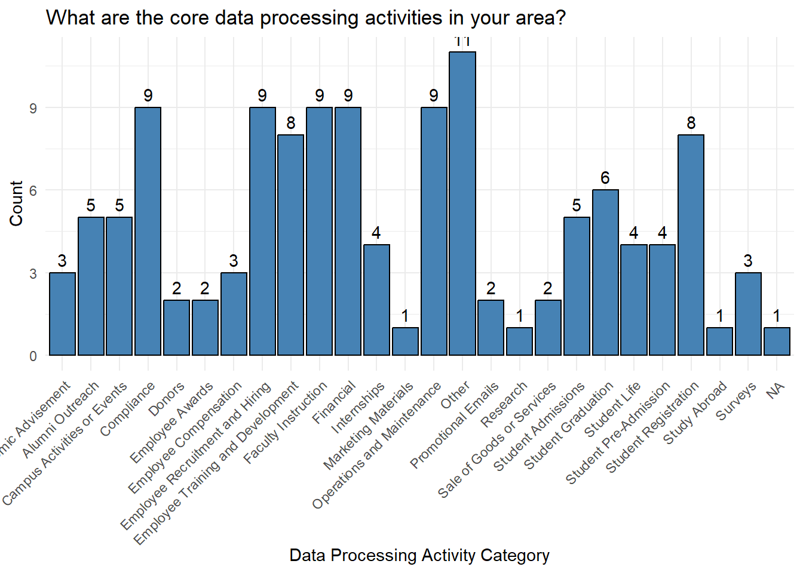
# View other responsesdataprocessingactivity_otherresponses <- data_processing_activity_categorized %>%filter(DataProcessingActivityCategory =="Other")print(dataprocessingactivity_otherresponses)
# A tibble: 11 × 3
ID DataProcessingActivity DataProcessingActivi…¹
<dbl> <chr> <chr>
1 9 "Code and we maintain the systems where the oth… Other
2 11 "Canvas LMS" Other
3 18 "Classroom Instruction" Other
4 19 "Library resources" Other
5 23 "each employee is responsible" Other
6 25 "We just teach students religion classes" Other
7 29 "Grading and Feedback to Students" Other
8 31 "Institute transfer credit" Other
9 32 "Records transfer and disposition " Other
10 124 "Healthcare Medical Records" Other
11 159 "Employer Relations " Other
# ℹ abbreviated name: ¹DataProcessingActivityCategory
# Data Subject# Define NA responsesdata_subject <- data_subject %>%mutate(DataSubject =na_if(DataSubject, "NA")) %>%mutate(DataSubject =na_if(DataSubject, "N/A"))# Define standard responsesdatasubject_standardresponses <-c("Alumni","Contractors","Customers","Donors","Employees/Faculty","Former Employees/Faculty","Individuals involved in research or studies","Prospective Employees","Prospective Students","Students","Vendors","Visitors (including website visitors)")# Categorize standard, NA, and other responsesdata_subject_categorized <- data_subject %>%mutate(DataSubjectCategory =case_when( DataSubject %in% datasubject_standardresponses ~ DataSubject,is.na(DataSubject) ~NA_character_,TRUE~"Other"))# Data Subject Bar Chartggplot(data_subject_categorized, aes(x = DataSubjectCategory)) +geom_bar(fill ="steelblue", color ="black") +geom_text(stat ='count', aes(label = ..count..), vjust =-0.5, color ="black") +theme_minimal() +theme(axis.text.x =element_text(angle =45, hjust =1)) +labs(x ="Data Subject Category", y ="Count", title ="What are the core categories of individuals (known as data subjects) whose personal data are processed in your area?")
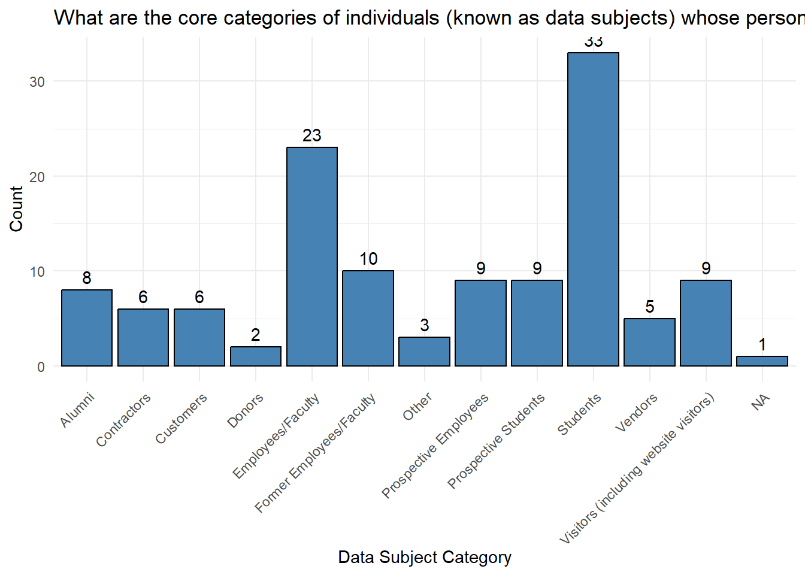
# View other responsesdatasubject_otherresponses <- data_subject_categorized %>%filter(DataSubjectCategory =="Other")print(datasubject_otherresponses)
# A tibble: 3 × 3
ID DataSubject DataSubjectCategory
<dbl> <chr> <chr>
1 19 Library patrons Other
2 124 Missionaries Other
3 159 Employers Other
# Personal Data Category# Define NA responsespersonal_data_category <- personal_data_category %>%mutate(PersonalDataCategory =na_if(PersonalDataCategory, "NA")) %>%mutate(PersonalDataCategory =na_if(PersonalDataCategory, "N/A"))# Define standard responsespersonaldatacategory_standardresponses <-c("Name & Role: Name, Job Title, Job Level, Profession, Social Media Account","Internal Identifiers: Student or Employment ID, Net ID, etc.","Identification Numbers: Government ID, Tax ID, SSN, Passport Number, etc.","Contact Information: Phone Number, Address, Email Address, Zip Code, IP Address","Personal Characteristics: Place of Birth, Age, Marital Status, Race, Nationality, Ethnic Origin, Military Status","Healthcare & Physical Characteristics: Height, Weight, Health Symptoms, Disability, Medication, Heart Rate, Blood Pressure, Other Health Info","Education & Training: Major or Course of Study, Professional Certifications & Licenses, Publications, Training Programs, Academic Grades, Ranking, Degrees Obtained, Schools and Universities Attended, Professional Org Membership, Professional Background, CV Information","Financial Information: Financial Account Numbers, Credit Card & Debit Card Numbers, CCV, CC Expiration Date, Loans, Compensation, Expenses, Incentives & Bonuses, Insurance","Biometrics & Genetics: Fingerprints, Facial Photographs Used for Identification Purposes, Facial Recognition Data, Genetic Markers, Retina Scans, DNA Sequence","Relationship Management: Engagement Rankings or Scores, Retention Ranking, Purchase Amount Ranking, Product or Services, Utilization Ranking, Other Customer, Student, Alumni Visitor, Measurements","Physical & Electronic Tracking: Event or Activity Attendance, Persistent Online Identifiers (e.g., Cookies), Precise Geographic Location Data, Surveillance Images, Browsing Infor (e.g., Website History, Network Interaction)","Politics: Politics Party Affiliation, Political Opinions, Political Views, Political Official Position or Appointment","Religion: Ecclesiastical Endorsements, Religious Practices, Religious Preference or Affiliation, Church, Synagogue or Other Place of Worship, Calling, Position or Role with Church, Synagogue or Other Place of Worship, Attendance at Religious Ceremonies","Background & Criminal: Legal Judgments or Orders, Criminal Convictions, Administrative Sanctions and Penalties, Criminal Suspicions, Criminal Charges, Criminal Sanctions and Penalties, Evictions, Results of a Background Check","Dates: Date of Birth, Date of Death, Hire Date, Other Dates Relative to the Individual","Misc.: Sexual Orientation, Data About Sex Life, Trade Union Membership, Philosophical Beliefs","Other: Survey Responses, Club Membership, Travel Information, Family Information, Photographs, Video/Audio Recordings, User Account Info, Other Data Related to a Natural Person")# Categorize standard, NA, and other responsespersonal_data_category_categorized <- personal_data_category %>%mutate(PersonalDataCategoryCategory =case_when( PersonalDataCategory %in% personaldatacategory_standardresponses ~ PersonalDataCategory,is.na(PersonalDataCategory) ~NA_character_,TRUE~"Other"))# Differentiate the columns by renamingnames(personal_data_category_categorized) <-c("ID","PersonalData","PersonalDataCategory")# Create mapping of full responses to shortened responsespersonaldatacategory_responsemapping <-c("Name & Role: Name, Job Title, Job Level, Profession, Social Media Account"="Name & Role","Internal Identifiers: Student or Employment ID, Net ID, etc."="Internal Identifiers","Identification Numbers: Government ID, Tax ID, SSN, Passport Number, etc."="Identification Numbers","Contact Information: Phone Number, Address, Email Address, Zip Code, IP Address"="Contact Information","Personal Characteristics: Place of Birth, Age, Marital Status, Race, Nationality, Ethnic Origin, Military Status"="Personal Characteristics","Healthcare & Physical Characteristics: Height, Weight, Health Symptoms, Disability, Medication, Heart Rate, Blood Pressure, Other Health Info"="Healthcare & Physical Characteristics","Education & Training: Major or Course of Study, Professional Certifications & Licenses, Publications, Training Programs, Academic Grades, Ranking, Degrees Obtained, Schools and Universities Attended, Professional Org Membership, Professional Background, CV Information"="Education & Training","Financial Information: Financial Account Numbers, Credit Card & Debit Card Numbers, CCV, CC Expiration Date, Loans, Compensation, Expenses, Incentives & Bonuses, Insurance"="Financial Information","Biometrics & Genetics: Fingerprints, Facial Photographs Used for Identification Purposes, Facial Recognition Data, Genetic Markers, Retina Scans, DNA Sequence"="Biometrics & Genetics","Relationship Management: Engagement Rankings or Scores, Retention Ranking, Purchase Amount Ranking, Product or Services, Utilization Ranking, Other Customer, Student, Alumni Visitor, Measurements"="Relationship Management","Physical & Electronic Tracking: Event or Activity Attendance, Persistent Online Identifiers (e.g., Cookies), Precise Geographic Location Data, Surveillance Images, Browsing Infor (e.g., Website History, Network Interaction)"="Physical & Electronic Tracking","Politics: Politics Party Affiliation, Political Opinions, Political Views, Political Official Position or Appointment"="Polotics","Religion: Ecclesiastical Endorsements, Religious Practices, Religious Preference or Affiliation, Church, Synagogue or Other Place of Worship, Calling, Position or Role with Church, Synagogue or Other Place of Worship, Attendance at Religious Ceremonies"="Religion","Background & Criminal: Legal Judgments or Orders, Criminal Convictions, Administrative Sanctions and Penalties, Criminal Suspicions, Criminal Charges, Criminal Sanctions and Penalties, Evictions, Results of a Background Check"="Background & Criminal","Dates: Date of Birth, Date of Death, Hire Date, Other Dates Relative to the Individual"="Dates","Misc.: Sexual Orientation, Data About Sex Life, Trade Union Membership, Philosophical Beliefs"="Misc.","Other: Survey Responses, Club Membership, Travel Information, Family Information, Photographs, Video/Audio Recordings, User Account Info, Other Data Related to a Natural Person"="Other Personal Data")# Apply shortened responsespersonal_data_category_categorized <- personal_data_category_categorized %>%mutate(ShortenedPersonalDataCategory = personaldatacategory_responsemapping[PersonalDataCategory])# Personal Data Category Bar Chartggplot(personal_data_category_categorized, aes(x = ShortenedPersonalDataCategory)) +geom_bar(fill ="steelblue", color ="black") +geom_text(stat ='count', aes(label = ..count..), vjust =-0.5, color ="black") +theme_minimal() +theme(axis.text.x =element_text(angle =45, hjust =1)) +labs(x ="Personal Data Category", y ="Count", title ="What personal data categories are involved in this processing?")
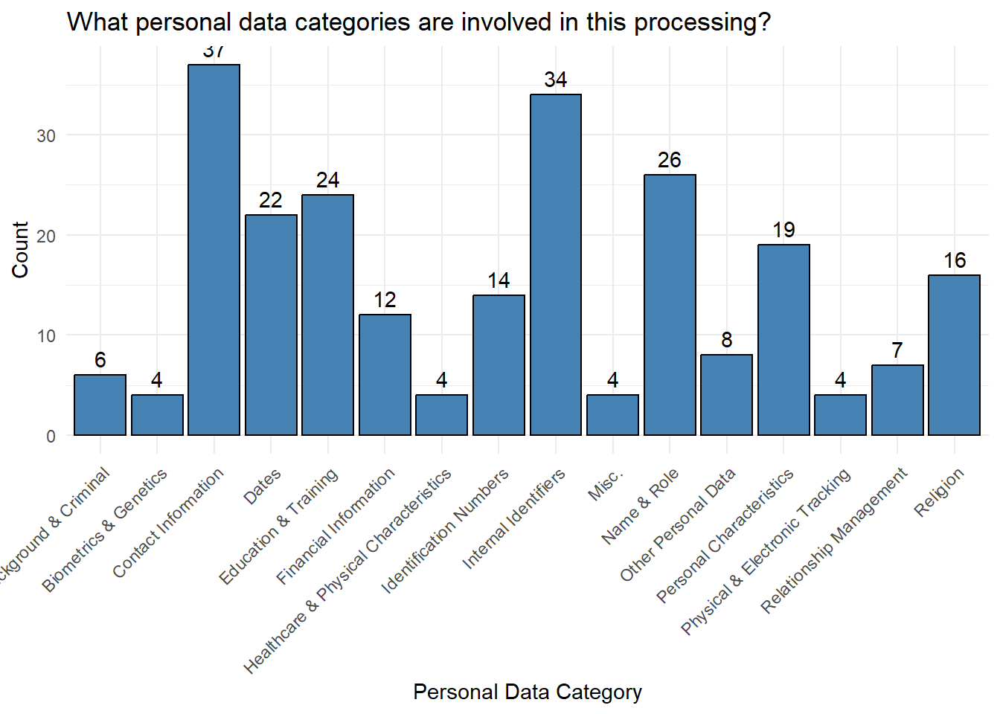
# View other responsespersonaldatacategory_otherresponses <- personal_data_category_categorized %>%filter(PersonalDataCategory =="Other")print(personaldatacategory_otherresponses)
# A tibble: 0 × 4
# ℹ 4 variables: ID <dbl>, PersonalData <chr>, PersonalDataCategory <chr>,
# ShortenedPersonalDataCategory <chr>
# Data Collection Source# Define NA responsesdata_collection_source <- data_collection_source %>%mutate(DataCollectionSource =na_if(DataCollectionSource, "NA")) %>%mutate(DataCollectionSource =na_if(DataCollectionSource, "N/A"))# Define standard responsesdatacollectionsource_standardresponses <-c("Directly from the individual","From another representative authorized to provide information on the individual's behalf (i.e., parent, ecclesiastical leader)","From another department or internal employee (i.e., professor, supervisor, etc.)","Obtained from a 3rd Party (i.e., vendor)")# Categorize standard, NA, and other responsesdata_collection_source_categorized <- data_collection_source %>%mutate(DataCollectionSourceCategory =case_when( DataCollectionSource %in% datacollectionsource_standardresponses ~ DataCollectionSource,is.na(DataCollectionSource) ~NA_character_,TRUE~"Other"))# Create mapping of full responses to shortened responsesdatacollectionsource_responsemapping <-c("Directly from the individual"="Directly from the individual","From another representative authorized to provide information on the individual's behalf (i.e., parent, ecclesiastical leader)"="From another authorized representative","From another department or internal employee (i.e., professor, supervisor, etc.)"="From another department or internal employee","Obtained from a 3rd Party (i.e., vendor)"="Obtained from a 3rd Party","Other"="Other")# Apply shortened responsesdata_collection_source_categorized <- data_collection_source_categorized %>%mutate(ShortenedDataCollectionSourceCategory = datacollectionsource_responsemapping[DataCollectionSourceCategory])# Data Collection Source Bar Chartggplot(data_collection_source_categorized, aes(x = ShortenedDataCollectionSourceCategory)) +geom_bar(fill ="steelblue", color ="black") +geom_text(stat ='count', aes(label = ..count..), vjust =-0.5, color ="black") +theme_minimal() +theme(axis.text.x =element_text(angle =45, hjust =1)) +labs(x ="Data Collection Source Category", y ="Count", title ="What is the source of the data collection?")
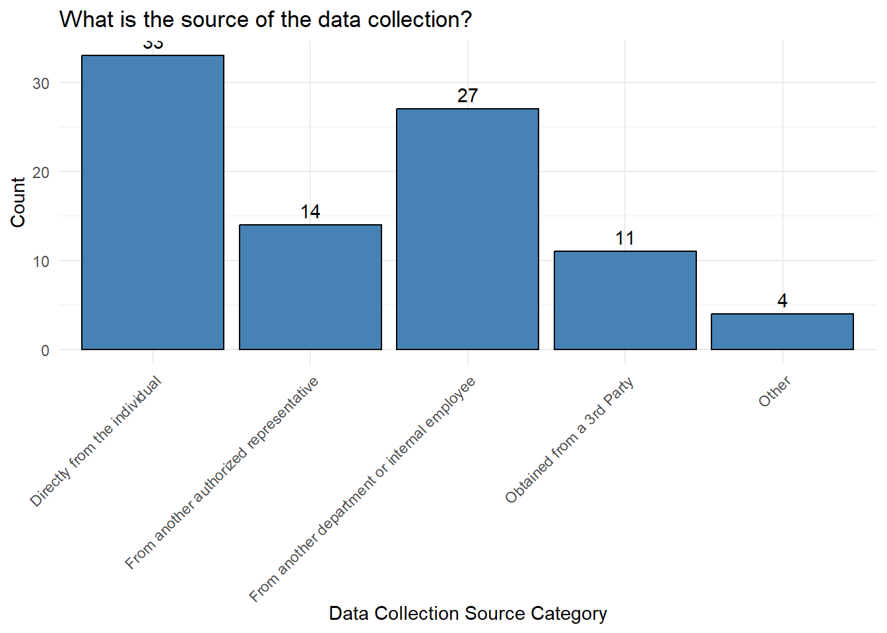
# View other responsesdatacollectionsource_otherresponses <- data_collection_source_categorized %>%filter(DataCollectionSourceCategory =="Other")print(datacollectionsource_otherresponses)
# A tibble: 4 × 4
ID DataCollectionSource DataCollectionSource…¹ ShortenedDataCollect…²
<dbl> <chr> <chr> <chr>
1 11 OIT Dept. (SIS), Jon Nich… Other Other
2 18 Canvas Other Other
3 22 internal databases - peop… Other Other
4 159 Linked In Other Other
# ℹ abbreviated names: ¹DataCollectionSourceCategory,
# ²ShortenedDataCollectionSourceCategory
# Data Collection Method# Define NA responsesdata_collection_method <- data_collection_method %>%mutate(DataCollectionMethod =na_if(DataCollectionMethod, "NA")) %>%mutate(DataCollectionMethod =na_if(DataCollectionMethod, "N/A"))# Define standard responsesdatacollectionmethod_standardresponses <-c("Paper forms","Electronic forms, surveys, or questionnaires","Emails or other digital communications","Mobile application or website","Focus groups or interviews","Business Application")# Categorize standard, NA, and other responsesdata_collection_method_categorized <- data_collection_method %>%mutate(DataCollectionMethodCategory =case_when( DataCollectionMethod %in% datacollectionmethod_standardresponses ~ DataCollectionMethod,is.na(DataCollectionMethod) ~NA_character_,TRUE~"Other"))# Data Collection Method Bar Chartggplot(data_collection_method_categorized, aes(x = DataCollectionMethodCategory)) +geom_bar(fill ="steelblue", color ="black") +geom_text(stat ='count', aes(label = ..count..), vjust =-0.5, color ="black") +theme_minimal() +theme(axis.text.x =element_text(angle =45, hjust =1)) +labs(x ="Data Collection Method Category", y ="Count", title ="What methods are used to collect this data?")
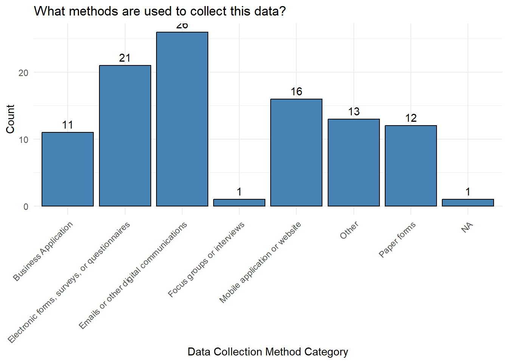
# View other responsesdatacollectionmethod_otherresponses <- data_collection_method_categorized %>%filter(DataCollectionMethodCategory =="Other")print(datacollectionmethod_otherresponses)
# A tibble: 13 × 3
ID DataCollectionMethod DataCollectionMethod…¹
<dbl> <chr> <chr>
1 6 "verbal" Other
2 8 "Workday, TrueScreen, E-Verify" Other
3 11 "SIS Integration, Canvas Data " Other
4 18 "I don't know, we don't collect it" Other
5 19 "Paper forms which are then shredded" Other
6 22 "I don't collect the data, I use it." Other
7 23 "we don't collect it" Other
8 25 "No collection of data, only what the college/s… Other
9 29 "Student admissions and course registrations" Other
10 31 "Electronic, Institute registration" Other
11 32 "Telephone" Other
12 116 "Canvas" Other
13 163 "Workday " Other
# ℹ abbreviated name: ¹DataCollectionMethodCategory
# Shared Data# Define NA responsesshared_data <- shared_data %>%mutate(SharedData =na_if(SharedData, "NA")) %>%mutate(SharedData =na_if(SharedData, "N/A"))# Define standard responsesshareddata_standardresponses <-c("Yes", "No")# Categorize standard, NA, and other responsesshared_data_categorized <- shared_data %>%mutate(SharedDataCategory =case_when( SharedData %in% shareddata_standardresponses ~ SharedData,is.na(SharedData) ~NA_character_,TRUE~"Other"))# Shared Data Bar Chartggplot(shared_data_categorized, aes(x = SharedDataCategory)) +geom_bar(fill ="steelblue", color ="black") +geom_text(stat ='count', aes(label = ..count..), vjust =-0.5, color ="black") +theme_minimal() +theme(axis.text.x =element_text(angle =45, hjust =1)) +labs(x ="Shared Data Category", y ="Count", title ="Is your data shared with other departments, vendors, or institutions, etc.?")
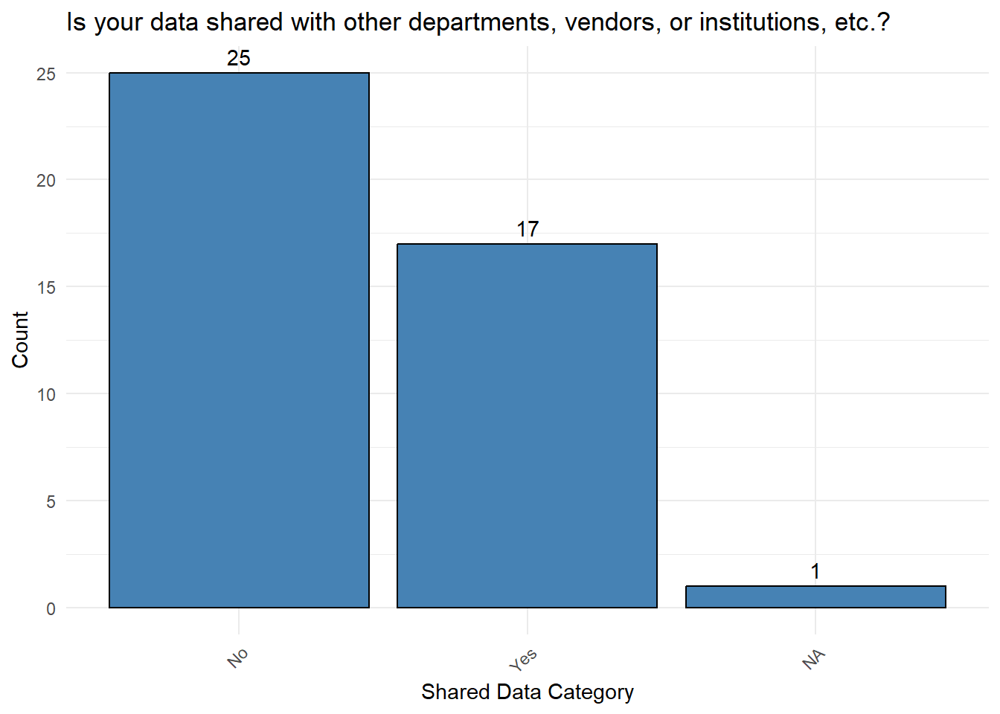
# View other responsesshareddata_otherresponses <- shared_data_categorized %>%filter(SharedDataCategory =="Other")print(shareddata_otherresponses)
# A tibble: 0 × 3
# ℹ 3 variables: ID <dbl>, SharedData <chr>, SharedDataCategory <chr>
# DSAs# Define NA responsesdsas <- dsas %>%mutate(DSAs =na_if(DSAs, "NA")) %>%mutate(DSAs =na_if(DSAs, "N/A"))# Define standard responsesdsas_standardresponses <-c("Yes", "No")# Categorize standard, NA, and other responsesdsas_categorized <- dsas %>%mutate(DSAsCategory =case_when( DSAs %in% dsas_standardresponses ~ DSAs,is.na(DSAs) ~NA_character_,TRUE~"Other"))# DSAs Bar Chartggplot(dsas_categorized, aes(x = DSAsCategory)) +geom_bar(fill ="steelblue", color ="black") +geom_text(stat ='count', aes(label = ..count..), vjust =-0.5, color ="black") +theme_minimal() +theme(axis.text.x =element_text(angle =45, hjust =1)) +labs(x ="DSAs Category", y ="Count", title ="Are corresponding Data Sharing Agreements (DSAs) in place?")
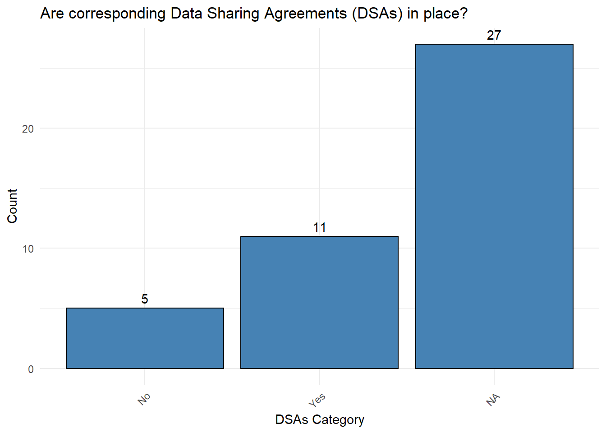
# View other responsesdsas_otherresponses <- dsas_categorized %>%filter(DSAsCategory =="Other")print(dsas_otherresponses)
# A tibble: 0 × 3
# ℹ 3 variables: ID <dbl>, DSAs <chr>, DSAsCategory <chr>
# Data Storage Location# Define NA responsesdata_storage_location <- data_storage_location %>%mutate(DataStorageLocation =na_if(DataStorageLocation, "NA")) %>%mutate(DataStorageLocation =na_if(DataStorageLocation, "N/A"))# Define standard responsesdatastoragelocation_standardresponses <-c("File cabinet","Hard drive","Shared drive","Box or One Drive","Email","Business Application")# Categorize standard, NA, and other responsesdata_storage_location_categorized <- data_storage_location %>%mutate(DataStorageLocationCategory =case_when( DataStorageLocation %in% datastoragelocation_standardresponses ~ DataStorageLocation,is.na(DataStorageLocation) ~NA_character_,TRUE~"Other"))# Data Storage Location Bar Chartggplot(data_storage_location_categorized, aes(x = DataStorageLocationCategory)) +geom_bar(fill ="steelblue", color ="black") +geom_text(stat ='count', aes(label = ..count..), vjust =-0.5, color ="black") +theme_minimal() +theme(axis.text.x =element_text(angle =45, hjust =1)) +labs(x ="Data Storage Location Category", y ="Count", title ="Where is this data stored?")
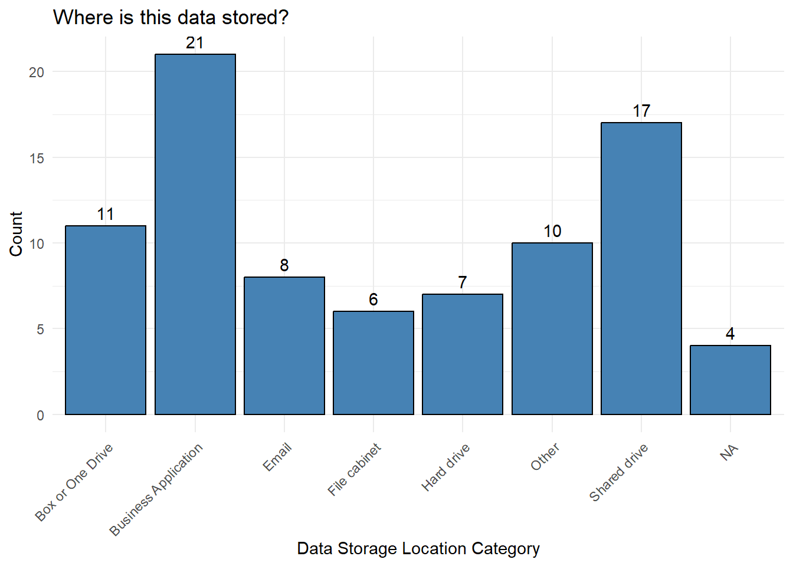
# View other responsesdatastoragelocation_otherresponses <- data_storage_location_categorized %>%filter(DataStorageLocationCategory =="Other")print(datastoragelocation_otherresponses)
# A tibble: 10 × 3
ID DataStorageLocation DataStorageLocationC…¹
<dbl> <chr> <chr>
1 11 "Good question. Ask Paul Eden in our OIT Dept." Other
2 17 "Laserfiche" Other
3 18 "Canvas" Other
4 19 "CES Library software" Other
5 20 "Workday" Other
6 25 "in CANVAS " Other
7 78 "Symphony (ILS), Illiad, Custom Built Applicati… Other
8 124 "Various virtual servers with redundant backup … Other
9 133 "Software Programs: Maxient & Civitas" Other
10 134 "Software Programs" Other
# ℹ abbreviated name: ¹DataStorageLocationCategory
# Public Facing Websites# Define NA responsespublic_facing_websites <- public_facing_websites %>%mutate(PublicFacingWebsites =na_if(PublicFacingWebsites, "NA")) %>%mutate(PublicFacingWebsites =na_if(PublicFacingWebsites, "N/A"))# Define standard responsespublicfacingwebsites_standardresponses <-c("Yes", "No")# Categorize standard, NA, and other responsespublic_facing_websites_categorized <- public_facing_websites %>%mutate(PublicFacingWebsitesCategory =case_when( PublicFacingWebsites %in% publicfacingwebsites_standardresponses ~ PublicFacingWebsites,is.na(PublicFacingWebsites) ~NA_character_,TRUE~"Other"))# Public Facing Websites Bar Chartggplot(public_facing_websites_categorized, aes(x = PublicFacingWebsitesCategory)) +geom_bar(fill ="steelblue", color ="black") +geom_text(stat ='count', aes(label = ..count..), vjust =-0.5, color ="black") +theme_minimal() +theme(axis.text.x =element_text(angle =45, hjust =1)) +labs(x ="Public Facing Websites Category", y ="Count", title ="Does your department have any public facing websites?")
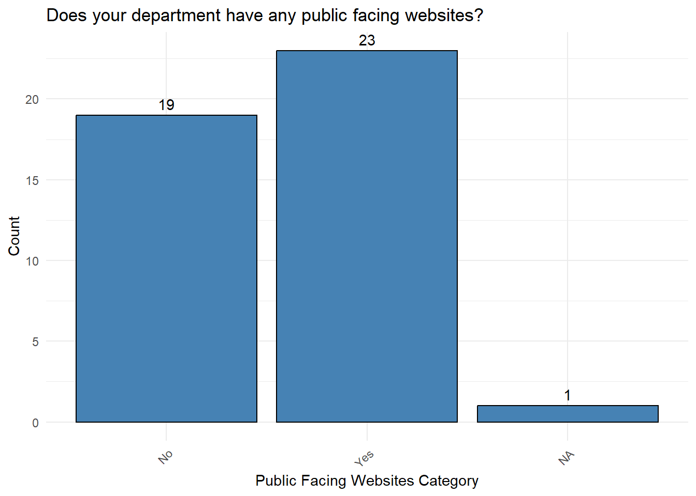
# View other responsespublicfacingwebsites_otherresponses <- public_facing_websites_categorized %>%filter(PublicFacingWebsitesCategory =="Other")print(publicfacingwebsites_otherresponses)
# A tibble: 0 × 3
# ℹ 3 variables: ID <dbl>, PublicFacingWebsites <chr>,
# PublicFacingWebsitesCategory <chr>
# Privacy Notice# Define NA responsesprivacy_notice <- privacy_notice %>%mutate(PrivacyNotice =na_if(PrivacyNotice, "NA")) %>%mutate(PrivacyNotice =na_if(PrivacyNotice, "N/A"))# Define standard responsesprivacynotice_standardresponses <-c("Yes", "No")# Categorize standard, NA, and other responsesprivacy_notice_categorized <- privacy_notice %>%mutate(PrivacyNoticeCategory =case_when( PrivacyNotice %in% privacynotice_standardresponses ~ PrivacyNotice,is.na(PrivacyNotice) ~NA_character_,TRUE~"Other"))# Privacy Notice Bar Chartggplot(privacy_notice_categorized, aes(x = PrivacyNoticeCategory)) +geom_bar(fill ="steelblue", color ="black") +geom_text(stat ='count', aes(label = ..count..), vjust =-0.5, color ="black") +theme_minimal() +theme(axis.text.x =element_text(angle =45, hjust =1)) +labs(x ="Privacy Notice Category", y ="Count", title ="Is there a link to a Privacy Notice in the footer or somewhere on the site?")
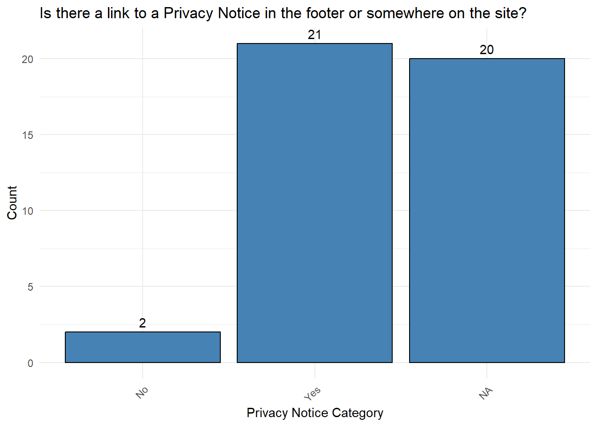
# View other responsesprivacynotice_otherresponses <- privacy_notice_categorized %>%filter(PrivacyNoticeCategory =="Other")print(privacynotice_otherresponses)
# A tibble: 0 × 3
# ℹ 3 variables: ID <dbl>, PrivacyNotice <chr>, PrivacyNoticeCategory <chr>
# Cookie Banner# Define NA responsescookie_banner <- cookie_banner %>%mutate(CookieBanner =na_if(CookieBanner, "NA")) %>%mutate(CookieBanner =na_if(CookieBanner, "N/A"))# Define standard responsescookiebanner_standardresponses <-c("Yes", "No")# Categorize standard, NA, and other responsescookie_banner_categorized <- cookie_banner %>%mutate(CookieBannerCategory =case_when( CookieBanner %in% privacynotice_standardresponses ~ CookieBanner,is.na(CookieBanner) ~NA_character_,TRUE~"Other"))# Cookie Banner Bar Chartggplot(cookie_banner_categorized, aes(x = CookieBannerCategory)) +geom_bar(fill ="steelblue", color ="black") +geom_text(stat ='count', aes(label = ..count..), vjust =-0.5, color ="black") +theme_minimal() +theme(axis.text.x =element_text(angle =45, hjust =1)) +labs(x ="Cookie Banner Category", y ="Count", title ="Is a Cookie Banner appropriately provided on the site?")
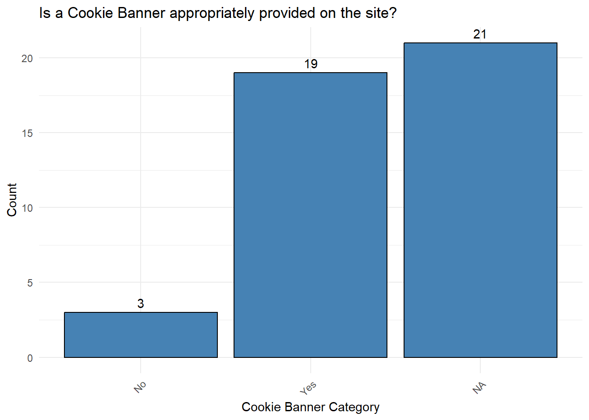
# View other responsescookiebanner_otherresponses <- cookie_banner_categorized %>%filter(CookieBannerCategory =="Other")print(cookiebanner_otherresponses)
# A tibble: 0 × 3
# ℹ 3 variables: ID <dbl>, CookieBanner <chr>, CookieBannerCategory <chr>
# Minor Related Data# Define NA responsesminor_related_data <- minor_related_data %>%mutate(MinorRelatedData =na_if(MinorRelatedData, "NA")) %>%mutate(MinorRelatedData =na_if(MinorRelatedData, "N/A"))# Define standard responsesminorrelateddata_standardresponses <-c("Yes", "No")# Categorize standard, NA, and other responsesminor_related_data_categorized <- minor_related_data %>%mutate(MinorRelatedDataCategory =case_when( MinorRelatedData %in% minorrelateddata_standardresponses ~ MinorRelatedData,is.na(MinorRelatedData) ~NA_character_,TRUE~"Other"))# Minor Related Data Bar Chartggplot(minor_related_data_categorized, aes(x = MinorRelatedDataCategory)) +geom_bar(fill ="steelblue", color ="black") +geom_text(stat ='count', aes(label = ..count..), vjust =-0.5, color ="black") +theme_minimal() +theme(axis.text.x =element_text(angle =45, hjust =1)) +labs(x ="Minor Related Data Category", y ="Count", title ="Does your area process any data related to minors, individuals aged 13 and under?")
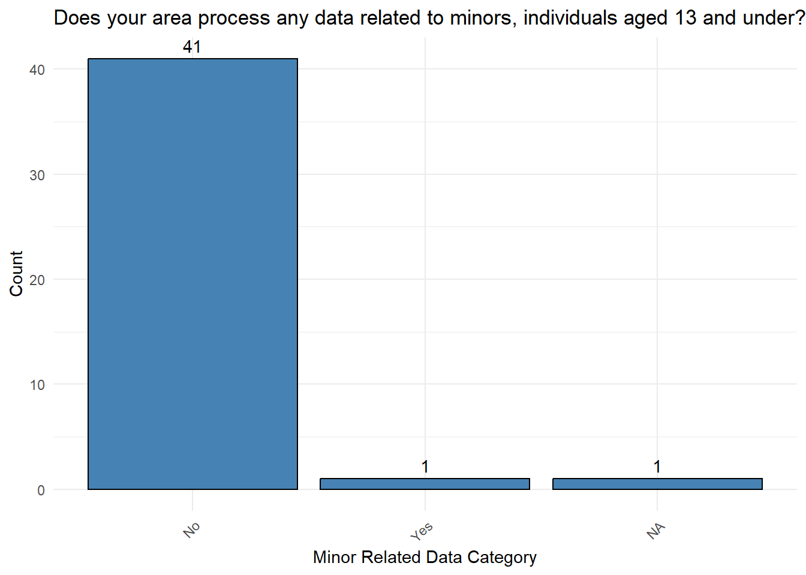
# View other responsesminorrelateddata_otherresponses <- minor_related_data_categorized %>%filter(MinorRelatedDataCategory =="Other")print(minorrelateddata_otherresponses)
# A tibble: 0 × 3
# ℹ 3 variables: ID <dbl>, MinorRelatedData <chr>,
# MinorRelatedDataCategory <chr>